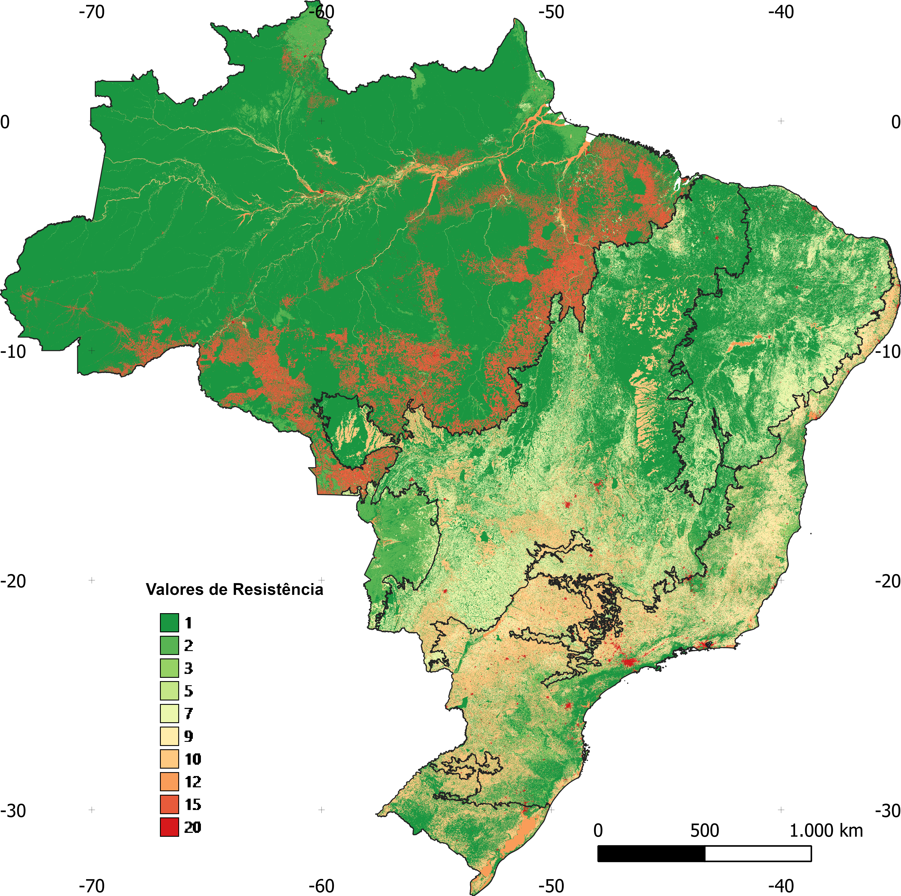
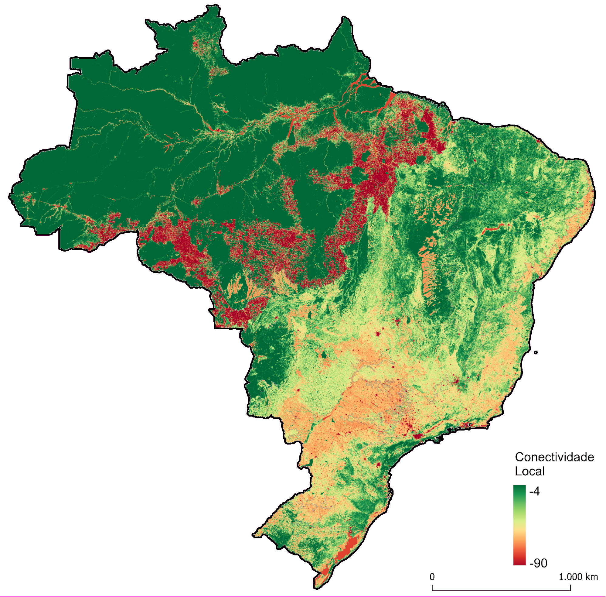

Resistência do uso e ocupação do solo
As áreas resilientes às mudanças climáticas são classificadas por dois eixos, (1) a heterogeneidade da paisagem e (2) conectividade local. A conectividade local é calculada sobre uma superfície de resistência ao movimento dos organismos na paisagem. Essa superfície representa, por meio da atribuição de pesos, o grau de dificuldade que os diferentes tipos de usos e coberturas do solo oferecem à movimentação dos organismos, sendo as coberturas naturais aquelas com menor resistência e as superfícies mais antropizadas, com maior resistência (ex. áreas urbanas).
Base de Dados
A superfície de resistência foi calculada usando como base os dados de uso e cobertura do solo fornecida pelo MapBiomas ((Projeto MapBiomas – Coleção 8 da Série Anual de Mapas de Cobertura e Uso da Terra do Brasil, acessado em outubro de 2023 através do link: https://storage.googleapis.com/mapbiomas-public/initiatives/brasil/collection_8/lclu/coverage/brasil_coverage_2022.tif) para o ano de 2021 (MapBiomas Project 2020). Complementamos essa camada do uso do solo com informações sobre: 1. Largura dos rios; 2. Presença de infraestruturas de transporte; 3. Infraestruturas de energia.
As informações sobre largura dos rios foram derivadas a partir das camadas de águas do abertas do MapBiomas (MapBiomas Project 2020), a camada de bacias hidrográficas no nível 8 [Lehner &Grill (2013)] e a camada de largura efetiva dos corpos d’água [Yamashida et al. 2014].
As informações sobre infraestrutura de transporte foram originadas a partir das camadas de estradas pavimentadas, estradas não-pavimentadas e ferrovias fornecidas pelo Instituto Brasileiro de Geografia e Estatística (IBGE) ([BCIM250, 2021]) (https://www.ibge.gov.br/geociencias/cartas-e-mapas/bases-cartograficas-continuas/15759-brasil.html?=&t=downloads).
As bases de infraestrutura de energia correspondem às camadas de aerogeradores, centrais geradoras de energia fotovoltaicas, linhas de transmissão de energia eólica e usinas termelétricas fornecidas pela Agência Nacional de Energia Elétrica (ANEEL) (https://gisepeprd2.epe.gov.br/WebMapEPE/) e a camada de linhas de transmissão de energia fornecida pelo IBGE ([BCIM250, 2021]).
Software
As classes de uso e cobertura do solo do MapBiomas, já com a divisão dos corpos d’água em classes de largura, foram acrescidas das classes de infraestrutura de transporte e energia, com pesos de resitência específicos para cada classe, para formarem a superfície de resistência. Essas análises foram realizadas no ArcGis 10.5. Todas as ferramentas do ArcGis 10.5 descritas abaixo podem ser acessadas no ícone de busca, conforme evidenciado na figura XX abaixo. Em seguida descreveremos a metodologia de maneira detalhada para que possa ser reproduzida.
Reamostragem do MapBiomas
As análises conduzidas para o mapeamento das áreas resilientes às mudanças climáticas foram realizadas na resolução espacial de 90 metros. Desta forma, reamostramos os dados do MapBiomas, que originalmente estavam com resolução de 30 metros, para uma resolução de 90 metros. A reamostragem foi realizada com o uso da ferramenta “Resample” pelo método de vizinho mais próximo (nearest). O arquivo de entrada “input raster” correspondeu a camada original do MapBiomas, e para o arquivo de saída “output raster” atribuímos um novo nome. A resolução de aproximadamente 90 metros (ou seja 0.00083333333) para o pixel do novo arquivo gerado foi estabelecida no campo Output Cell Size (optional). A escolha do método Nearest foi definida no campo Resampling technique (optional) (Figura 1). No final do processo de reamostragem seguimos a mesma classificação proposta pelo MapBiomas (com 27 classes) para colorir os usos do solo ((map1-mapbiomas?)).


Largura dos Corpos d’água
A classe do MapBiomas de cobertura do solo na escala de 90m equivalente a águas abertas (rios, lagos e oceanos; (map2_aguas?)) foi subdividida em quatro classes distintas de acordo com a largura dos corpos d’água já que rios mais largos tendem a ser barreiras mais resistêntes à movimentação das espécies.

Para fazer a divisao, extraímos a máscara de corpos de águas abertas e dividimos essa classe única em pedaços menores, regionalizando suas larguras por trechos. Esta divisão ocorreu com o uso da ferramenta “Raster Calculator” (Figura 5), por meio da intersecção entre as camadas matriciais de águas abertas e de bacias hidrográficas no nível 8, produzidas por Lehner &Grill (2013)((map3-bacias?)).


Para cada um dos trechos gerados foi extraída a largura efetiva máxima dos corpos d’água, de margem a margem (base GWD – LR de Yamashida et al. 2014) ((map4-aguasporbacias?)). O cálculo do valor máximo de largura de cada trecho de águas abertas foi realizad por meio da estatística zonal (Figura 6).


Com base nos valores de largura máxima agrupamos os trechos dos rios em quatro classes de largura: i. 1 a 250 metros, ii. 250 a 1000 metros, iii. 1000 a 4000 metros e iv. maiores de 4000 metros. Por meio da ferramenta “Mosaic to New Raster” (Figura 7), realizamos uma mosaicagem entre a camada contendo essas quatro classes e a camada do MapBiomas (já subtraída da classe de águas abertas), elevando de 29 para 32 o número de classes de uso e cobertura do solo.
Acrescentamos uma coluna na tabela de atributos da camada gerada onde pudemos atribuir, por bioma, os valores de resistência de cada uma das classes. Os valores de resistência têm como objetivo representar de forma comparativa o grau de dificuldade imposto à movimentação da biodiversidade por cada classe específica de uso e cobertura do solo. As premissas assumidas para definir os valores foram: i. quanto maior for a diferença estrutural da classe de cobertura do solo para o hábitat original do bioma, maior será a dificuldade à movimentação que a classe oferece e ii. corpos d’água mais largos oferecem maior resistência ao deslocamento de organismos terrestres na paisagem do que corpos d’água mais estreitos.
Os valores de resistência das classes foram atribuídos, por bioma, pela equipe do projeto e por um grupo de especialistas. Esses valores variaram de 1 a 20 em números inteiros, sendo 1 o valor menos resistente e 20 o mais resistente Tabela 1.

Conversão das camadas de Infraestrutura
As camadas de infraestrutura de transportes e energia estavam em formatos vetoriais e foram convertidas para raster, com pixels de tamanho aproximado de 90 m (Figura 5). Essa conversão foi realizada para cada arquivo usando a ferramenta Polyline to Raster, onde o arquivo de entrada, Input Features, corresponde a camada de infraestrutura original e o arquivo de saída, Value field, é a camada raster que será criada e a definição da resolução espacial, Output Raster Dataset corresponde à 90 metros (ou 0.00083333333).

As camadas raster geradas receberam valores de resistência (ver valores de resistência na Tabela 1) como atributo específico das classes de infraestrutura e, posteriormente, todas as camadas foram agrupadas em um único arquivo matricial. Para realizar esse agrupamento, usamos a ferramenta Cell Statistics, informando, no campo overlay satatistic, que o resultado do agrupamento deve considerar o valor máximo do pixel (Figura 6). Essa indicação é importante para que, na sobreposição das várias camadas de infraestrutura, prevaleça sempre o valor de pixel com resistência mais alta (valor máximo de resistência).

Cell Statistics”, no ArcGis 10.5, para agrupar as bases de infraestrutura em uma única superfície, onde prevalecem os valores máximos de resistência atribuídos a cada classe (ver descrição dos valores de resistência, abaixo).Usando a ferramenta Cell Statistics conjugamos as bases matriciais do MapBiomas e de infraestrutura do IBGE e ANEEL, de tal maneira que igualmente ao que foi realizado nos agrupamentos das camadas de infraestrutura nas sobreposições, sempre prevaleceu o maior valor de resistência (Figura 7).

Feita esta operação, obtivemos uma nova superfície matricial (raster), composta apenas pelos valores de resistência das 39 classes analisadas (Tabela 1).
| N | Classe de cobertura do solo | Amazônia | Caatinga | Cerrado | Mata Atlântica | Pampa | Pantanal |
|---|---|---|---|---|---|---|---|
| 1 | Afloramento rochoso | 3 | 1 | 2 | 3 | 2 | - |
| 2 | Algodão | 7 | 7 | 10 | - | - | - |
| 3 | Aquacultura | - | 10 | 7 | 7 | 7 | - |
| 4 | Área urbana | 20 | 20 | 20 | 20 | 20 | 20 |
| 5 | Áreas alagadas (Campos e Pântanos) | 1 | - | 1 | 2 | 1 | 1 |
| 6 | Arroz | - | - | 10 | 10 | 10 | - |
| 7 | Café | - | 7 | 10 | 4 | - | - |
| 8 | Cana de açúcar | 15 | 10 | 10 | 10 | - | 10 |
| 9 | Citrus | - | - | 10 | 4 | - | - |
| 10 | Dendê | 10 | - | - | - | - | - |
| 11 | Floresta alagada | 1 | - | - | - | - | - |
| 12 | Formação campestre (campos) | 1 | 1 | 1 | 2 | 1 | 1 |
| 13 | Formação de savana | 1 | 1 | 1 | 2 | - | 1 |
| 14 | Formação florestal | 1 | 1 | 1 | 1 | 1 | 1 |
| 15 | Mangue | 1 | 1 | 1 | 1 | - | - |
| 16 | Mineração | 20 | 20 | 20 | 20 | 20 | 20 |
| 17 | Mosaico de usos | 10 | 7 | 10 | 10 | 10 | 7 |
| 18 | Outras áreas não vegetadas | 10 | 10 | 10 | 10 | 10 | 10 |
| 19 | Outras culturas perenes | 10 | 7 | 7 | 4 | - | - |
| 20 | Outras culturas temporárias | 15 | 7 | 10 | 10 | 10 | 5 |
| 21 | Outras formações não florestais | - | 7 | - | 2 | - | - |
| 22 | Pastagem | 17 | 7 | 7 | 9 | 7 | 7 |
| 23 | Praia, duna e areal | 2 | 2 | 2 | 2 | 2 | 2 |
| 24 | Salina (Apicum) | 2 | 1 | 2 | 2 | - | - |
| 25 | Silvicultura (floresta plantada) | 7 | 2 | 7 | 3 | 10 | 5 |
| 26 | Soja | 17 | 10 | 10 | 10 | 10 | 10 |
| 27 | Vegetação de restinga arbórea | - | 1 | - | 1 | 1 | - |
| 28 | Vegetação de restinga herbácea | - | 1 | - | 2 | 1 | - |
| 29 | Corpos d’águas abertas até 250 metros | 2 | 2 | 2 | 2 | 2 | 2 |
| 30 | Corpos d’águas abertas de 250 a 1000 metros | 5 | 5 | 5 | 5 | 5 | 5 |
| 31 | Corpos d’águas abertas de 1000 a 4000 metros | 10 | 10 | 10 | 10 | 10 | 10 |
| 32 | Corpos d’águas abertas acima de 4000 metros | 12 | 12 | 12 | 12 | 12 | 12 |
| 33 | Aerogeradores | 15 | 15 | 15 | 15 | 15 | 15 |
| 34 | Centrais geradoras de energia solar | 15 | 17 | 17 | 17 | 17 | 17 |
| 35 | Estradas não pavimentadas | 10 | 10 | 7 | 10 | 7 | 3 |
| 36 | Estradas pavimentadas | 20 | 20 | 20 | 20 | 20 | 20 |
| 37 | Ferrovias | 10 | 10 | 10 | 10 | 10 | 10 |
| 38 | Linhas de transmissão (tradicionais e anexas ao sistema eólico) | 10 | 7 | 7 | 7 | 7 | 7 |
| 39 | Termelétricas | 20 | 20 | 20 | 20 | 20 | 20 |

Gerando a camada de Conectividade Local
A superfície final de conectividade local foi gerada a partir das seguintes etapas: • Etapa 1 Usando a ferramenta “Reclassify” do Spatial Analyst (Figura 9 - (fig6?)) construímos máscaras a partir da superfície de uso e cobertura do solo, gerando duas superfícies: a. Superfície de águas abertas, onde as classes de largura dos rios receberam o valor de 1 e as demais classes foram consideradas como NoData ((fig7?)). b. Superfície terrestre, onde as classes de água foram reclassificadas para NoData e das demais receberam o valor igual a 1 ((fig7?)).
• Etapa 2 Usando a ferramenta Focal Statistics, aplicamos a função Kernel à superfície de resistência gerada para todo o Brasil (Figura 10 - (fig8?)). Esta análise considerou uma função de decaimento linear em uma janela móvel definida por um raio de 23 pixels (~2070 m), que representa o contexto espacial em que cada pixel está inserido, reconhecendo que pixels mais próximos possuem maior influência um sobre o outro do que pixels mais distantes, influenciando o valor de conectividade local de cada pixel. Desta maneira, a função Kernel nos auxilia na tarefa de encontrar os melhores caminhos de deslocamento na paisagem, ou seja, aqueles caminhos que oferecem menor resistência.
• Etapa3 Multiplicamos a superfície gerada na etapa 2 pela superfície a (de águas abertas) geradas na etapa 1. Essa multiplicação foi realizada com o uso da ferramenta “Raster Calculator” (Figura 11 - (fig9?)), nos fornecendo os valores de conectividade local apenas para os corpos d’água. Os valores de conectividade local gerados para as águas abertas, uma vez que foram gerados juntamente com os valores para as áreas terrestres (na Etapa 2), consideram a influência da resistência das áreas terrestres na conectividade dos corpos d’água. Na prática isso quer dizer que se um pequeno corpo d’água estiver inserido em uma área de baixa resistência, como uma formação florestal, ele terá valores de conectividade local maiores do que se estiver inserido em uma área de alta resistência, como uma pastagem, por exemplo.
• Etapa 4 Multiplicamos a superfície b (máscara das classes terrestres) gerada na etapa 1 pela superfície de resistência original. Esta operação foi realizada com o auxílio da ferramenta “Raster Calculator” (Figura 11 - (fig9?)) e nos forneceu um arquivo de resistência apenas para as áreas terrestres. Neste cenário os valores de resistência das classes de águas abertas, por terem sido excluídos das análises, não afetam os valores de resistência das áreas terrestres.
• Etapa 5 Aplicamos o filtro Kernel à superfície de resistência das classes terrestres (gerada na etapa 4). Essa análise foi realizada com o auxílio da ferramenta “Focal Statistics” e gerou uma camada de conectividade local onde as áreas terrestres não são influenciadas pelas águas abertas. Ou seja, nesta operação esperamos que um organismo terrestre não evite um pixel de habitat na borda de um rio largo, por exemplo, simplesmente porque esse rio oferece uma grande resistência para ser transposto.
• Etapa 6 Usando a ferramenta “Mosaic to new Raster” (Figura 12- (fig10?)), realizamos a mosaicagem das superfícies geradas nas etapas 4 e 5. Esse produto é considerado a nossa superfície final de conectividade local (Figura 13 - (fig11?)).
Por fim, para calcularmos os valores finais de conectividade local multiplicamos os valores de resistência por -1 por considerarmos que a conectividade é o inverso dos valores de resistência suavizados pelo kernel ?@fig-7.
